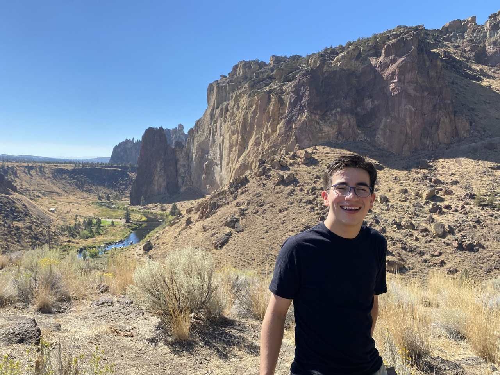

<section id="about">
    <div class="about-container">
        <div class="about-text">
            <h2>About Me</h2>
            <p> I'm a student at the University of Oregon graduating in December, 2025 and seeking concurrent degrees in Computer Science and Music. I'm currently seeking Internship oppurtunities for the summer of 2025, and am interested in full-stack development in particular.</p>
            <p><strong>Coursework:</strong> Computer Architecture, Int. Artificial Intelligence, Operating Systems </p>
            <p><strong>Languages:</strong> C/C++, Python, Javascript, HTML/CSS, SQL</p>
            <p><strong>Frameworks/Libraries</strong>Flask, node.js, React.js, express.js, mySQL, mongoDB, Bootstrap</p>
            <p><strong>Developer Tools:</strong> Git, Docker, AWS, VScode</p>
            <p><strong>Operating Systems:</strong> Unix (Linux, macOS)</p>
            <p>Please explore my projects below and don't hesitate to reach out.</p>
        </div>
        
    </div>
</section>
